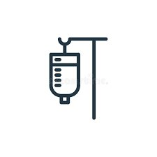

AN IOT BASED SALINE MONITORING SYSTEM
-Ardiuno uno
-Esp32 38bit
-ultra sonics sensors
-temperature sensors
-IR sensors
-8bit logic controller
-Html and css (for front end develpoment of the webpage)
-js(javascript) for back end development of the webpage
-ardiuno IDE used for writing the program in ardiuno uno and ESP 32
Image from Freepik
We build this IOT device(SALINE IQ) with passion and skills.
our team members played a crucial role in keeping this project alive. for more information visit the contact page .write your opinion on this project and some suggestions
Real-time Monitoring:Continuous tracking of saline concentration levels in medical solutions or patient body fluids.
Integration with displays or apps to show live readings.
Alerting System:
Alerts for high or low saline concentrations, notifying healthcare providers when levels fall outside of safe ranges. Configurable thresholds for different medical conditions.
Calibration and Maintenance Support:
Built-in support for sensor calibration to ensure accurate readings.
Automated or manual calibration options.
Maintenance reminders and diagnostics to ensure sensor accuracy and longevity.
data logging: reads the real time data and updates it to the doctors or nurses on there mobile devices.